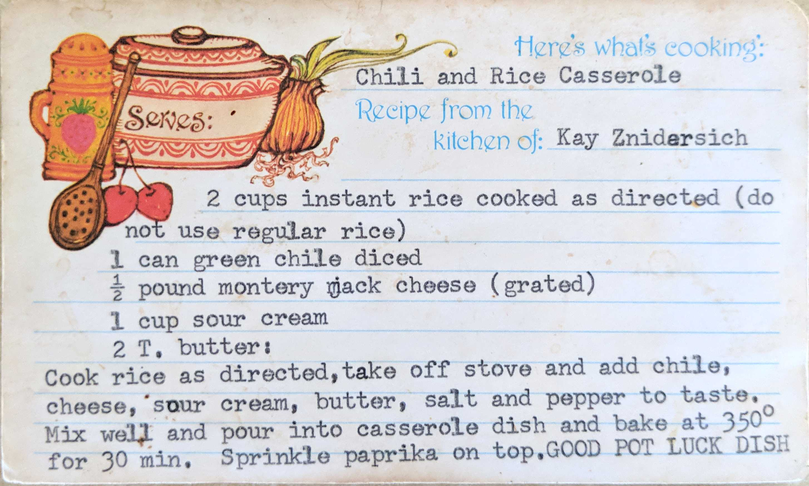

Chili and Rice Casserole
Recipe from the kitchen of: Kay Znidersich
2 cups instant rice cooked as directed (do not use regular rice)
1 can green chile diced
1/2 pound montery jack cheese (grated)
1 cup sour cream
2 T. butter:
Cook rice as directed, take off stove and add chile, cheese, sour cream, butter, salt and pepper to taste.
Mix well and pour into casserole dish and bake at 350° for 30 min. Sprinkle paprika on top.
GOOD POT LUCK DISH